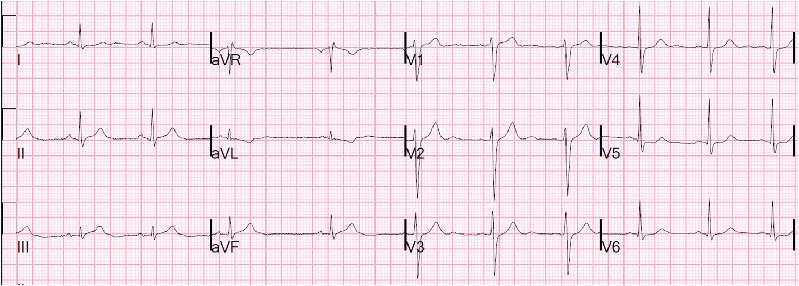
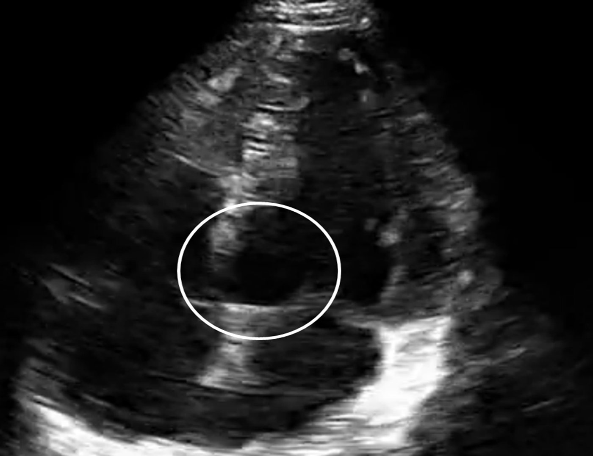
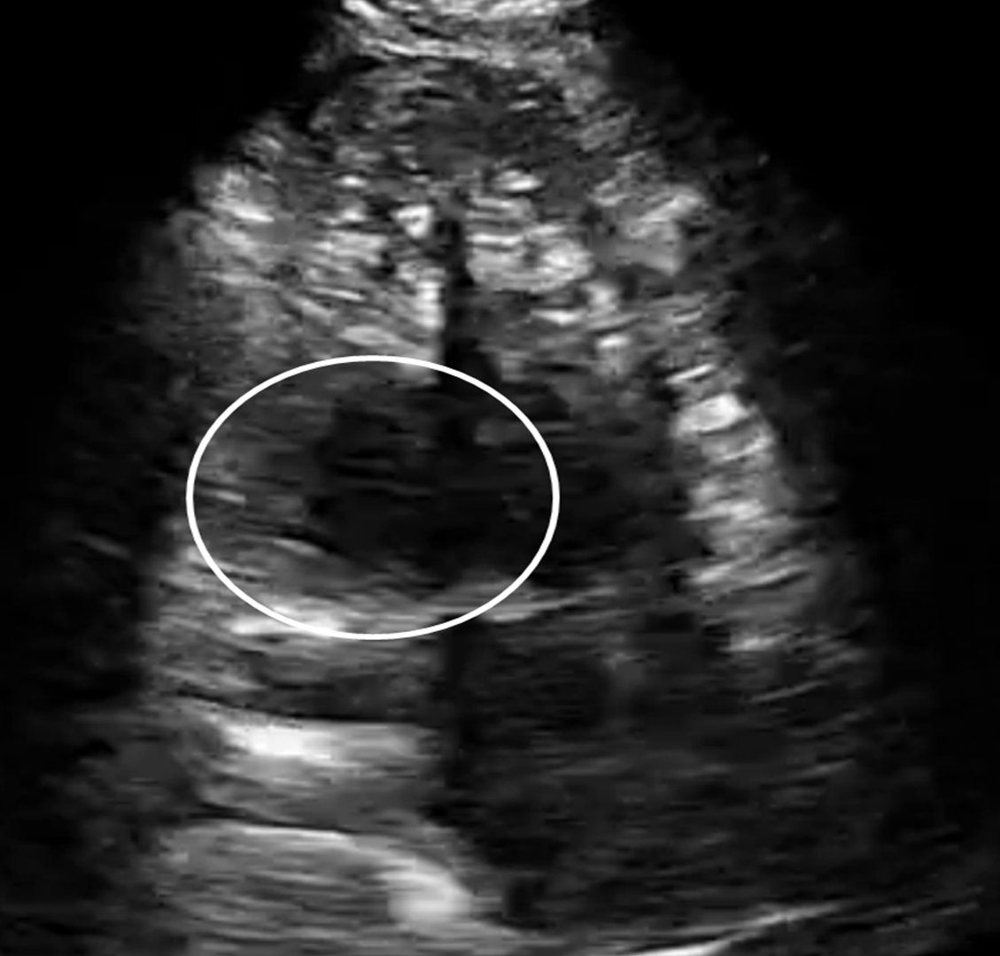
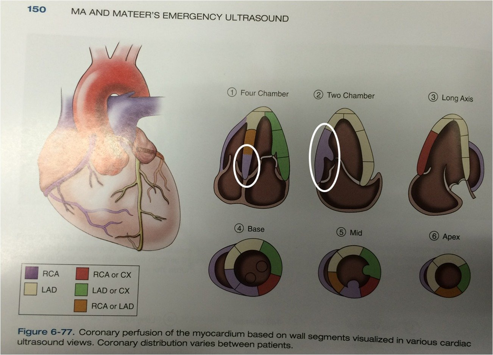
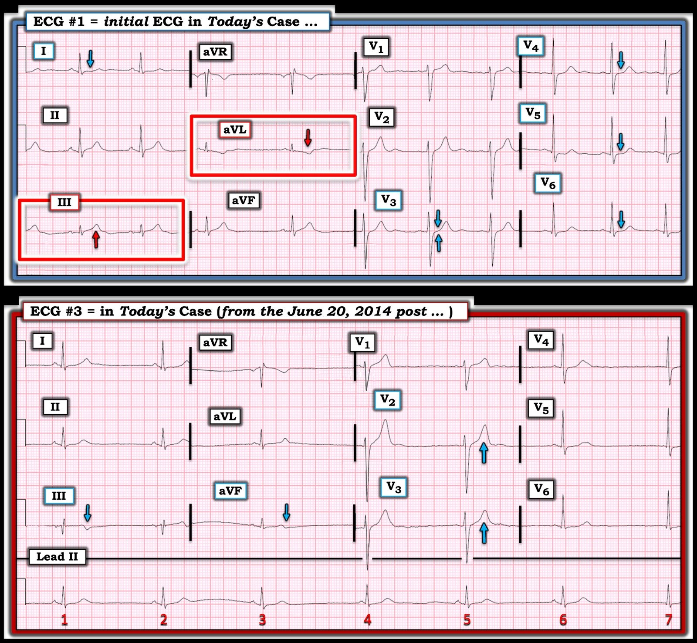
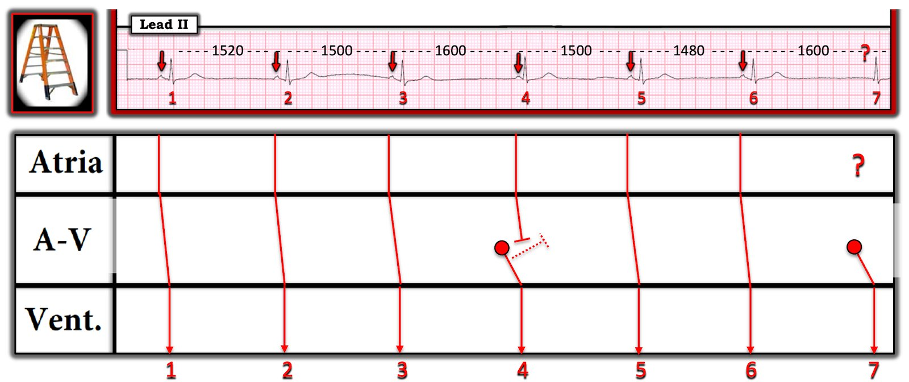

10/05/2025 — Siêu âm tim tại giường ở khoa cấp cứu (phòng khi không nhận ra trên điện tâm đồ). Hình ảnh do một người mới học thu nhận và diễn giải.
Bản dịch tiếng Việt của bài "ED Bedside Echo (in case one does not recognize the ECG). Images obtained and interpreted by a novice." – Dr. Smith’s ECG Blog. Giữ nguyên toàn bộ 8 hình ảnh và 3 video của bản gốc.
Đây là bài đăng lại của một bài đăng lại về một ca bệnh từ năm 2014. Ca bệnh gốc ở đây, với nhiều chi tiết hơn nếu bạn muốn đọc.
Vào thời điểm đó, tôi chưa giỏi nhận ra OMI kín đáo như bây giờ.
Bệnh nhân đến viện vì ngất và đau vùng cơ thang, kèm chóng mặt nhẹ và cảm giác khó chịu mơ hồ ở ngực trái.
Đây là điện tâm đồ tại khoa cấp cứu (ED):


Khi đăng lần đầu năm 2014, tôi đã nói điện tâm đồ này không có giá trị chẩn đoán nhưng đáng ngờ.
Năm 2025, tôi chẩn đoán OMI giỏi hơn nhiều, và giờ thấy rằng điện tâm đồ này có giá trị chẩn đoán OMI. Điều này không phải nhờ "kính nhìn hồi cứu" (retrospectoscope). Giờ đây chúng tôi có một cách khách quan để đánh giá OMI, không bị ảnh hưởng bởi bất kỳ thiên kiến nào. Đó là mô hình AI điện tâm đồ PMCardio “Queen of Hearts”, thứ mà vào thời điểm đó chúng tôi chưa phát triển. Nhưng tôi đã đưa điện tâm đồ này qua mô hình AI PMCardio Queen of Heart vào năm 2025: “STEMI Equivalent” (tương đương STEMI) nghĩa là OMI
Vậy Queen nói rằng điện tâm đồ này có giá trị chẩn đoán OMI, và chỉ ra lý do bằng màu xanh lam sáng
Một bác sĩ nhi khoa đang học siêu âm tim tại giường và mới chỉ làm 20 lần siêu âm tim trong đời được cử vào để tập siêu âm trên bệnh nhân này, không hề nghĩ sẽ tìm thấy gì, thậm chí không nghĩ mình có khả năng tìm thấy gì. Anh ấy đã ghi lại hình siêu âm tim này từ mặt cắt 4 buồng từ mỏm:
Siêu âm tim 1 do người mới học thực hiện của Stephen Smith trên Vimeo.
Mặt cắt 4 buồng này được ghi bởi một chuyên gia siêu âm tim cấp cứu:
Siêu âm tim 13 của Stephen Smith trên Vimeo.
Đây là một khung hình tĩnh có vòng tròn đánh dấu vùng rối loạn vận động thành:


Đây là mặt cắt hai buồng (chỉ có LV và LA, đầu dò xoay 90 độ so với mặt cắt 4 buồng từ mỏm), cho thấy thành dưới-sau ở phía bên trái của hình.
Mặt cắt 2 buồng của Stephen Smith trên Vimeo.
Đây là một khung hình tĩnh ở thì tâm thu cho thấy rối loạn vận động thành ở đáy tim, phía bên trái của hình:


Đây là sơ đồ các rối loạn vận động thành trên siêu âm tim:


Đây là các diễn biến tiếp theo:
Điều này cho thấy ngay cả người mới học cũng có thể nhìn thấy các rối loạn vận động thành mà, đặc biệt nếu chúng tương ứng với các dấu hiệu điện tâm đồ kín đáo, có thể giúp chẩn đoán hội chứng vành cấp (ACS).
Cảnh báo:
Tôi xin cảnh báo rằng rối loạn vận động thành có thể rất khó nhìn thấy, và cũng có những trường hợp dương tính giả.
Thường cần đến chất cản âm siêu âm tim, cùng một chuyên gia siêu âm tim để thu nhận và đọc hình ảnh một cách chính xác.
Nhưng có những lúc người ít kinh nghiệm hơn vẫn có thể xác định tạm thời rối loạn vận động thành, và điều đó có thể giúp chẩn đoán ACS.

===================================
BÌNH LUẬN CỦA TÔI, bởi KEN GRAUER, MD (10/5/2025):
===================================
Tất cả chúng ta đều học hỏi mọi lúc. Gần đây tôi có dịp xem lại “hồ sơ của tôi” — gồm nhiều điện tâm đồ mà tôi đã thu thập từ nhiều năm trước. Khi nhìn lại cách tôi đã diễn giải một số bản ghi này cách đây 20 đến 30 năm — tôi kinh ngạc trước: i) Tôi đã học được nhiều đến thế nào kể từ lần đầu nhìn thấy những điện tâm đồ đó; và, ii) Thực hành y khoa đã thay đổi nhiều đến thế nào, xét về việc đánh giá điện tâm đồ ở bệnh nhân CP (Đau Ngực — Chest Pain).
- Như Dr. Smith đã nói — Năm 2025, cả hai chúng tôi đều giỏi hơn nhiều trong việc nhận ra OMI kín đáo so với thời điểm ca hôm nay được đăng lần đầu năm 2014. Vì vậy — cả hai chúng tôi đều ngay lập tức nhận ra gợi ý mạnh về OMI dưới-sau cấp từ điện tâm đồ ban đầu của ca hôm nay — cho đến khi chứng minh được điều ngược lại. Một thập kỷ trước, tôi sẽ không chắc chắn như vậy về chẩn đoán này.
- Có lẽ mục tiêu chính của Dr. Smith khi đăng lại ca này từ ngày 23 tháng Sáu năm 2014 — là nhấn mạnh siêu âm tim có thể sâu sắc đến mức nào trong đánh giá tại khoa cấp cứu ở bệnh nhân mới đau ngực (như được minh chứng trong phần bàn luận phía trên của Dr. Smith — rối loạn vận động thành khu trú thấy trên siêu âm tim đã khẳng định nghi ngờ lâm sàng của ông từ điện tâm đồ về OMI thành dưới cấp).
Để rõ ràng, trong Hình 1 — tôi tập trung bình luận vào các dấu hiệu điện tâm đồ then chốt trên điện tâm đồ ban đầu của ca hôm nay — cùng với một số dấu hiệu thú vị trên bản ghi thứ 3 của ca năm 2014 này (3 điện tâm đồ và mô tả gốc của ca này có trong bài đăng ngày 20 tháng Sáu năm 2014).
Trước hết xem điện tâm đồ ban đầu (bản ghi TRÊN CÙNG ở Hình 1):
- Ở người đàn ông trung niên có triệu chứng mới này — “con mắt” của tôi lập tức bị thu hút bởi các dấu hiệu kín đáo nhưng có thật ở chuyển đạo III và chuyển đạo aVL (trong các hình chữ nhật ĐỎ).
- Xét biên độ rất nhỏ của QRS ở chuyển đạo III trên điện tâm đồ 1 — sóng T ở chuyển đạo này trông “đầy đặn” không tương xứng (“béo” hơn ở đỉnh và rộng hơn ở đáy so với mong đợi).
- Với kích thước rất nhỏ của QRS ở chuyển đạo aVL — sóng T đảo ngược ở chuyển đạo này rõ ràng là bất thường, và khẳng định nghi ngờ của chúng ta rằng sóng T ở chuyển đạo III là sóng T tối cấp (tức là, Chúng ta thấy mối quan hệ ST-T đối ngược hình ảnh soi gương “kỳ diệu“ ở hai chuyển đạo nằm đối diện nhau là III và aVL, mà ở một bệnh nhân có triệu chứng mới thì gần như chẩn đoán OMI thành dưới cấp cho đến khi chứng minh được điều ngược lại).
- Chuyển đạo bên cao còn lại ( = chuyển đạo I ) — dẹt một cách bất thường, do đó là thêm một thay đổi soi gương với thay đổi thấy ở chuyển đạo aVL.
- Các mũi tên XANH LAM ở chuyển đạo trước tim đánh dấu ST dẹt bất thường. Bình thường phải có ST chênh lên nhẹ, dốc lên thoai thoải ở V2 và V3. Điều này dường như có ở chuyển đạo V2 — nhưng các mũi tên XANH LAM kép ở chuyển đạo V3 cho thấy đoạn ST thẳng đuỗn không hề có ST chênh lên ở chuyển đạo này. Với ST dẹt ở các chuyển đạo V4,V5,V6 — chúng ta biết bất thường ở chuyển đạo V3 là có thật ==> điện tâm đồ #1 gợi ý mạnh OMI dưới-sau cấp cho đến khi chứng minh được điều ngược lại.


Điều gì xảy ra ở điện tâm đồ #3?
Một thời gian sau trong diễn tiến của ca bệnh ngày 20 tháng Sáu năm 2014 — điện tâm đồ #3 đã được ghi.
- Điểm MẤU CHỐT: So sánh các điện tâm đồ liên tiếp tốt nhất là bằng cách so sánh trực tiếp từng chuyển đạo với nhau (như được trình bày trong Hình 1).
- Sóng T tối cấp ở chuyển đạo III và chuyển đạo aVF trên điện tâm đồ #1 — giờ đã xẹp xuống, với phần cuối sóng T đảo ngược trên điện tâm đồ #3.
- Thay đổi sóng T tái tưới máu cũng thấy ở các chuyển đạo bên cao I và aVL — cả hai giờ đều rõ ràng có sóng T dương hơn (cao hơn). (Lưu ý mối quan hệ soi gương “kỳ diệu” đó vẫn được duy trì trong các thay đổi sóng T tái tưới máu soi gương ở hai chuyển đạo đối diện III và aVL).
- Thay đổi tái tưới máu thành sau cũng thấy ở các chuyển đạo V2 và V3 (Lưu ý biên độ sóng T dương tăng lên ở các chuyển đạo này).
CÂU HỎI:
- Nhịp là gì trên điện tâm đồ #3 ???
=============================
TRẢ LỜI:
Rất DỄ bỏ sót việc nhịp trên điện tâm đồ #3 không phải nhịp xoang!
- Rõ ràng từ dải nhịp chuyển đạo II dài trên điện tâm đồ #3 — là có nhịp chậm rõ rệt. Hơn thế nữa — Điều gì xảy ra với khoảng PR?
- Như được trình bày trong giản đồ bậc thang (laddergram) dưới đây ở Hình 2 — do nhịp xoang chậm thêm (nhận thấy qua khoảng R-R tăng lên) — khoảng PR trước nhát #4 quá ngắn để dẫn truyền. Vì vậy, nhát #4 là một nhát thoát bộ nối.
- Tần số xoang tăng nhẹ để tạo ra nhát xoang #5 — nhưng không thấy sóng P nào trước nhát #7, do đó nhát #7 là một nhát thoát bộ nối khác.
- Về lâm sàng — bệnh nhân này vừa tụt huyết áp vừa nhịp chậm, tất cả đều liên quan với OMI dưới-sau cấp (rõ ràng là hậu quả của tăng trương lực phó giao cảm, như thường thấy trong những giờ đầu của nhồi máu cơ tim thành dưới cấp). Bệnh nhân được đưa đi thông tim — và phát hiện tắc RCA cấp, đã được đặt stent.
- T.B. (P.S.): “Tin tốt” — là nhịp chậm rõ rệt (và nhịp thoát bộ nối đi kèm) phát sinh do tăng trương lực phó giao cảm trong những giờ đầu của nhồi máu cơ tim thành dưới cấp — thường đáp ứng tốt với việc dùng Atropine thận trọng nếu cần điều trị nhịp chậm.

